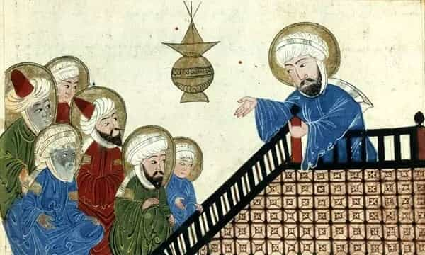

< < < Back
Why China Is Winning The Game Of Civilization – Return Of Kings
While the West is on its death throes, China is growing ever more ascendant. What factors allow China to be resistant to the leftist degeneracy and third-world immigration that the West so readily accepts?
The Biological Role

Within the human species are myriad permutations of culture and levels of cultural achievement. Not all cultures are equal, and some cultures enable those that practice it to gradually conquer and displace other cultures by either having a greater drive to expand or by converting members of other cultures due to cultural attractiveness. We have seen this happen many times in history.
The general trend we observe is that K-selective populations tend to produce cultures that are most geared towards long term survival and family unity, and these cultures achieve higher levels of human development. These cultures, in turn, conquer, assimilate, or displace cultures that are less K-selective.
As we all know, a cold climate places selective pressures in the direction of K-selection, and agriculture places selective pressures in the direction of higher IQ. In fact, it is often postulated that a minimum IQ of 70 is necessary for the invention of agriculture. This explains why some parts of Africa and the entire Australian continent never invented agriculture, and remained hunters and gatherers until colonization.
This also explains the well-known hierarchy of intelligence with certain Sub-Saharan African groups and Australian Aboriginals at the bottom, Caucasians of Asia Minor and Eastern Europe in the middle, Northern Europeans near the top, and East Asians dominating the highest position with a 5-8 IQ point gap. One can argue the validity of this info out of ego, but I assure you conclusive studies have proven this to be the rule, not the exception.
The Eternal Civilization
In a world of many industrialized nations cucking themselves out of existence, Chinese culture stands tall. No, this is not a praise of Chinese culture. This is a simple acknowledgement of the fact that Chinese culture has stood for 5000 continuous years to this day, and is still steaming along with seeming impunity. It assimilated foreign conquerors, conquered lesser peoples, formed tributary states that adopted their script, and ushered in scientific achievements that changed the world.
This culture saw its birth in roughly the same era as many of the ancient cultures we know of today, such as the Sumerians, the Greeks, the Persians, the Romans, and the Egyptians. But while the founding origins of those cultures are today politically insignificant nations that have succumbed to Islamic barbarism or have become r-selective debt traps or war-torn shit holes, China stands strong.
China is not without its problems (as any country), but it stands strong, unified, and in recognition of its ancient greatness. It does not cower in the face of multiculturalism or political correctness. It does not run from the challenge of sovereignty. More importantly, even beyond the geographical confines of China itself, Chinese culture remains vibrant across the globe.
Chinese communities rarely give up their culture in other nations, and places with large East Asian populations tend to counteract the negative impact of r-selective, third world migration. In places like Australia, affluent East Asian populations displace lower achieving populations by driving up property prices, be these populations native whites or otherwise. Those less able to perform in a competitive free market are pushed to further and further fringes of the cities, leaving the city center relatively crime free.
But what is it that sets Chinese culture apart from that of Europe, and why is it that while Europe is a mere decades away from The Islamic Republic of Eurostan, Chinese culture is experiencing a resurgence?
The Cultural Pillar Hypothesis

The reason for the resilience of Chinese culture to corruption via technology, ideology, or demographics lies in the very fact that the foundation of Chinese culture is the family, rather than a particular religion. While Christian Europe achieved immense levels of K-selective cultural traits such as family values, monogamy, and a strong patriarchy, these were never organic. In fact, prior to the adoption of Abrahamic religions in Europe en mass, indigenous European cultures, while still fairly K-selective, never developed the memetic habituations that match the high level of civilization achieved under Christianity.
However, this clever use of an external religion to stabilize indigenous societies is fundamentally unstable precisely because it is mythology. The inevitable advent of scientific thought dooms any religion to eventual irrelevance, as the divine force in the ether becomes less and less relatable to the common man.
Much more relevant to him, then, is the great renaissance of ideas that may benefit his immediate situation, whatever his station in life. This in and of itself would have been relatively harmless had it not been for the fact that almost the entirety of European civilization is based upon this one Abrahamic religion. The gradual debunking of this religion, thus, ultimately saw the dismantling of European culture itself.
It is no wonder, then, that Europeans seem indifferent towards hostile Islamic migrants. No European deep down wishes to see Islamic dominance or convert to Islam, but when the key pillar of European culture is now relegated to the realms of abstraction and comedy, what is there left to defend? Why remain monogamous, why adhere to rationality and reason, why bar women from their own terrible decisions, why maintain division of labor, why uphold a patriarchal society, and why defend your borders when the one cultural incentive for you to do so has crumpled beneath your feet?
Well meaning men may as well grant women and those without property the vote, set in employment quotas, and cower under the heels of feminists if it means getting a lick of vagina.
Chinese culture, on the other hand, took a very different approach. My hypothesis is that because East Asians are even more K-selected than Europeans, there were sufficient indigenous selective pressures to develop a culture that entirely transcends the need for divine punishment in order to encourage society to behave in the most optimal manner for the benefit of long-term survival. Thus an organic family oriented society emerged, and as an added result, eliminated the opportunity for dogmatic religions to ever become popular.
Throughout the 5000 years of Chinese civilization, no one religion ever held much sway over its people, and any religious practice is performed merely out of a sense of honor, politeness, and elaborate lip service. Many of us confuse Confucianism for some sort of religion. But the Chinese and their Korean, Japanese, and Vietnamese brethren most certainly do not. No one worships Confucius, and no one calls him a god.
Confucianism, if understood from a broader and more rational perspective, is merely one wandering scholar’s idea of a society that elevated the family unit above all else. Its lasting legacy is no more than its mass acceptance by a receptive Chinese society. A slightly less K-selective society may well have rejected it.
Civilizations can’t survive without elevating the family unit
A culture based on the pillar of family unity is very difficult to corrupt. It provides nothing mystical for technological advancement to debunk, and while political ideologies may seem grand and their respective despots may seem larger than life with their cult of personalities, their relevance to the common man does not dispel the importance of a family unit.
Indeed, it is no wonder why the preposterous Western invention of Marxism ultimately lost in its war against Chinese culture, with the latter coming out on top, guns blazing and trousers down, defecating on the charred corpse of leftist bullshit. Feminism is also unpopular in East Asian societies (unless they have been forcibly Westernized, and even then it is hardly the fashion of the day) because men, and especially fathers, are far less likely to cave to the irrational whims of women just to keep them happy for an instant at the cost of civilization.
Men and fathers are much more likely to swallow the discomfort of seeing a woman not getting her way in order to save her and society from greater suffering down the track. Even in the business world we observe that most Chinese people refer to businesses by the term “家” (pronounced “jia”) which is literally translated as “family”. A common colloquial trope, for example, is “the food from this 家 tastes better than the food from that 家”, meaning “the food from this restaurant tastes better than the food from that restaurant”.
Conclusion

I’ve noticed that in the face of white male cuckoldry, white females often diverge on two paths in the alternative mating market. Most go for r-selective men of darker backgrounds. But a minority end up going for shitlord East Asians. The latter often display traits so starkly contrasted with their more r-selected sisters that you can tell them apart from a mile away.
Firstly, they tend to be better educated in proper areas such as hard sciences. Secondly, they are far less promiscuous and far more feminine, with higher estrogen production. Finally, they defer to the man in a relationship, never seeking to hold power, and always appreciating the man’s capacity to lead.
I believe in the larger context of biology, these females (and also the males that genuinely get into East Asian cultures) are the most k-selective of the white group, and in the past would have been handsomely rewarded both sexually and economically in European societies due to their higher productivity and civility. In the modern day and age, however, their sexual market value plummets, as they no longer represent what is in fashion.
Whatever new degeneracy the West happens to invent, and it always seems to come from the West, rest assured that the Chinese elevation of the family will have some built-in resistance to it. The white race is in trouble, and until they mimic the Chinese and their worship of family, they will be replaced by Muslims or other third-world races sooner than you think.
Read Next: Is Western Civilization Worth Saving?